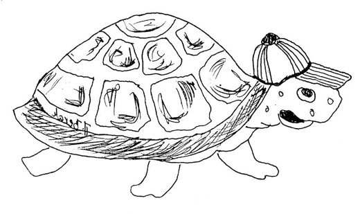

Kornjača
The Tortoise

Upregla se kornjačau vlastita kola,pa ih sama vučemjesto starog vola.
The tortoise has harnessedherself to her cart,and hauls it alone,playing the old ox's part.
A kada je zimaili jako vruće,kolica joj služemjesto prave kuće.
And when it is winteror ever so hot,her little cart servesas the house she's not got.
Četvora vratasa strane imai vrlo se vještozna služiti njima.
It has four doorsset into the sides,and she's very skilledat using them, besides.
Čas noge uvuče,čas opet ispruži.Mjesto kotačima,nogama se služi.
Now she pulls her legs in,now she sticks them out;instead of on wheels,on legs she gets about.
Sprijeda ima prozor,da proturi glavukako bih kroz njegamogla pasti travu.
In front there's a windowto poke her head through,so grass, through that window,she's able to chew.
Još jedan prozorčićsasvim straga ima,kroz koji repićemlijevo-desno klima.
And one little windowat the back is supplied,through which her small tailwags from side to side.